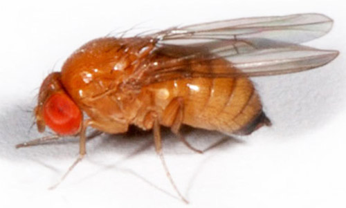
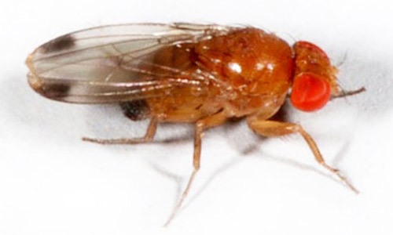
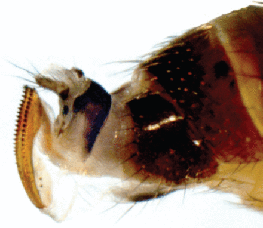
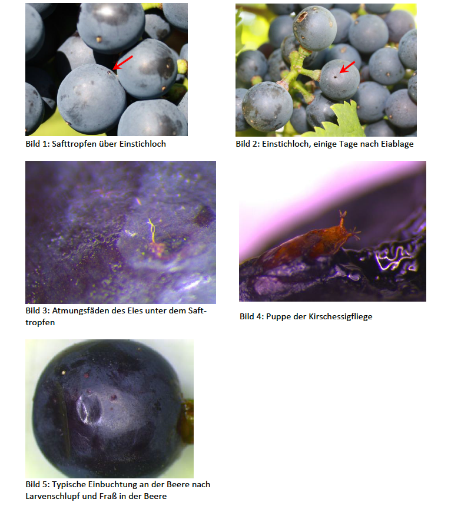
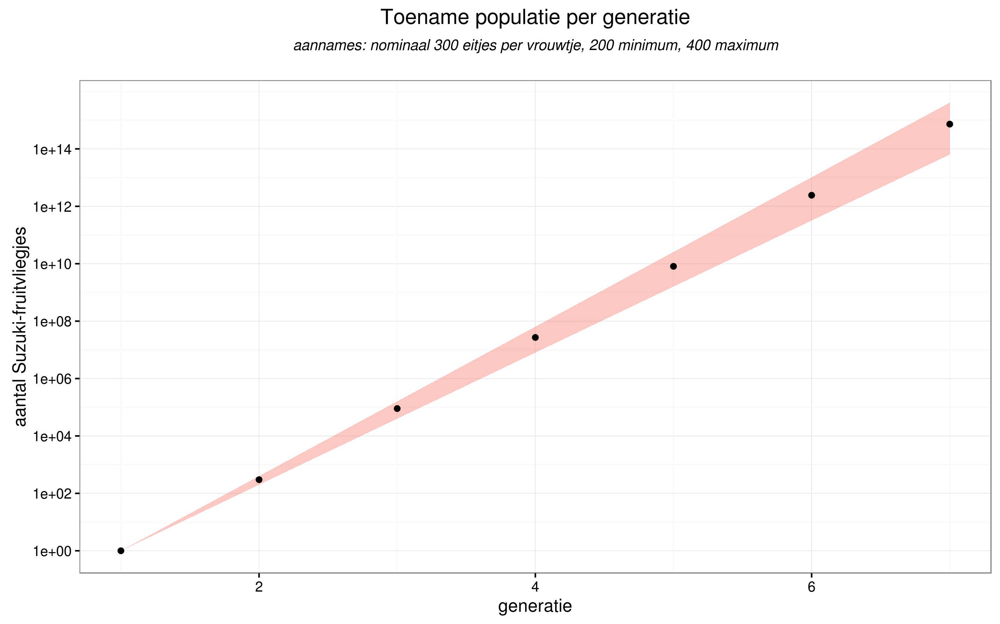
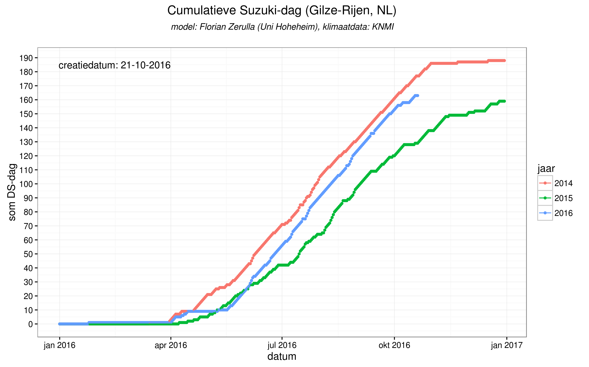
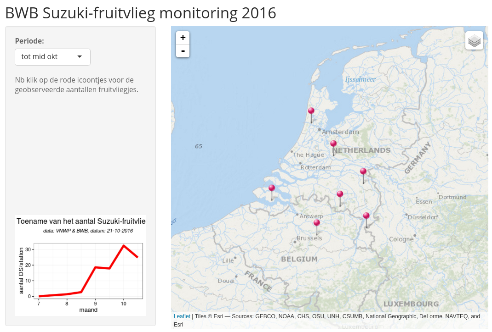

| Vrouwtje van de Suzuki-fruitvlieg | Mannetje van de Suzuki-fruitvlieg |
|---|---|
|  |  |
Aangetast fruit leidt tot micro-biologische aantasting
Fruit is onverkoopbaar/onverwerkbaar –> economische schade


Een model voor de populatie-groei.
Verwachting
Wijnbouw in Nederland is (opnieuw) mogelijk door de hogere temperaturen in onze regio:
Wikipedia cijfers 2007
BWB cijfers 2016
Kenmerken
waardoor een nieuwe plaag hard aankomt.
Resultaat: 
Alleen slecht nieuws?
Stagnatie van reproductiesnelheid
Enkele eenvoudige en meer complexe modellen voor de populatiegroei
Gebaseerd op slechts één parameter; de temperatuur (in zogenaamde graaddagen).
Parameters zoals de relatieve luchtvochtigheid en de windkracht worden genegeerd.
Graaddag (maat voor “positieve dag voor de ontwikkeling van de fruitvlieg”) uitbreiden met:
“Suzuki-dag”: DDds = DDtemp x DDrelvocht x DDwind 
conclusie: 2014 al vanaf vroeg in het seizoen gunstiger voor DS dan 2015.
Levenscyclus D. suzukii meenemen in model
Eileg per wijfje
7-16 eieren/dag
384 eieren max. in 3-9 weken
per vrucht: 3 eieren/wijfje
eileg van meerdere wijfjes in 1 vrucht mogelijk: tot 50 larven gevonden in 1 vrucht
Eileg in de morgen en avond uren, vanaf ongeveer april/mei afhankelijk status van vruchten
Larve
na 12-72 u uit ei (afh. van T°)
3 larvale stadia in fruit: 3-13 dagen
Pop in de vrucht of op het oppervlak ervan; 3-15 dagen
Pop verlaat fruit;
volwassen vliegen 3-15 dagen later
levenscyclus
afhankelijk temp en RV
Van ei tot adult:
Snelste : ± 8 dagen
Gemiddeld: ± 20-30 dagen
Monitoringsdata:
Klimaatdata:

BWB monitoring